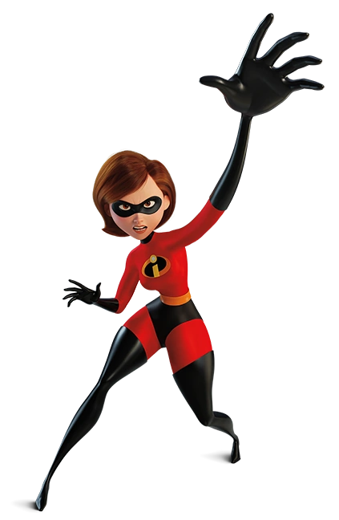

Elastic Girl, llamada Hellen Parr, era la mayor superheroína del momento, como su nombre lo dice, su poder era ser elástica y gracias a esto podía tomar diversas formas o estirar sus diferentes partes del cuerpo y ganar contra los malos. Gracias a su trabajo conoció a Mr. Increible y nació su amor. Luego de unos cuantos años tuvieron dos hijos y unos años depués decidieron tener el tercero; sus hijos Violeta, Dash y Jack Jack, al igual que ellos, tienen super poderes. Luego de que saliera la ley en contra de los superheroes ella se convirtió en ama de casa y decidió dedicarse al 100% en sus hijos.
